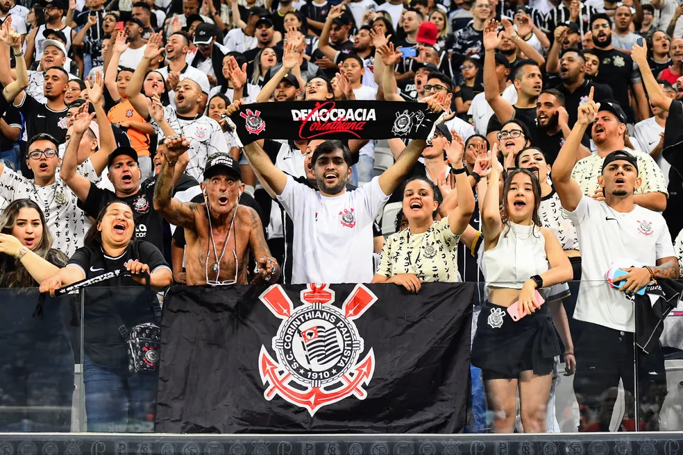
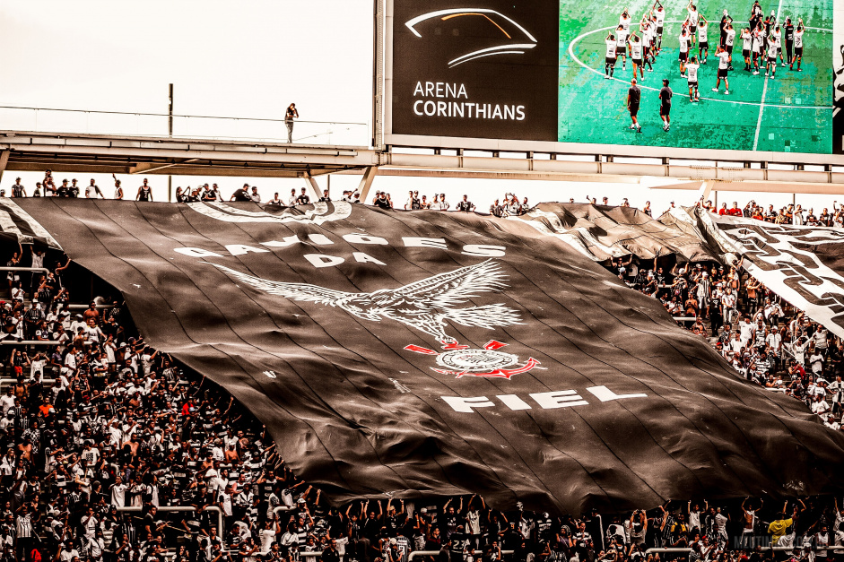

História do Sport Club Corinthians Paulista
O Sport Club Corinthians Paulista, popularmente conhecido como Corinthians, é um dos clubes de futebol mais icônicos e populares do Brasil e do mundo. Fundado em 1º de setembro de 1910, em São Paulo, o Corinthians foi criado por um grupo de operários do bairro Bom Retiro, inspirado no Corinthian FC, uma equipe amadora de Londres que realizou uma turnê pelo Brasil naquele ano.
A Fundação e os Primeiros Passos (1910-1920)
A ideia de fundar um clube de futebol acessível às classes trabalhadoras surgiu quando cinco amigos — Joaquim Ambrosio, Antônio Pereira, Rafael Perrone, Anselmo Correia e Carlos Silva — decidiram criar um time que pudesse representar o povo. Diferente de outros clubes da época, que eram elitistas e formados por membros da alta sociedade, o Corinthians foi fundado com o objetivo de ser inclusivo e acessível.
Em seus primeiros anos, o clube jogava em campos improvisados e enfrentava dificuldades financeiras, mas rapidamente ganhou popularidade. Em 1913, ingressou na Liga Paulista de Futebol e, em 1914, conquistou seu primeiro Campeonato Paulista. Essa conquista foi um marco importante, pois consolidou o Corinthians como uma força emergente no futebol paulista.
Crescimento e Consolidação (1920-1940)
Durante as décadas de 1920 e 1930, o Corinthians continuou a crescer em popularidade e sucesso. O clube conquistou uma série de títulos paulistas e começou a construir sua reputação como uma das principais potências do futebol brasileiro. Em 1929, o clube adotou a camisa branca como uniforme oficial, uma mudança que se tornaria emblemática.
A década de 1930 também viu o início das primeiras rivalidades históricas do Corinthians, especialmente contra o Palmeiras (na época, Palestra Itália), que se tornaria um dos maiores clássicos do futebol brasileiro, conhecido como "Derby Paulista".
Período de Jejum e Redenção (1950-1970)
Nos anos 1950, o Corinthians viveu um período de glória, com vários títulos estaduais. No entanto, após o título paulista de 1954, o clube entrou em um jejum de 23 anos sem conquistar o Campeonato Paulista. Esse período de dificuldades terminou em 1977, com uma vitória épica sobre a Ponte Preta, que marcou o fim de um dos maiores jejuns do futebol brasileiro.
Democracia Corinthiana e Novas Conquistas (1980-2000)
Nos anos 1980, o Corinthians foi palco da Democracia Corinthiana, um movimento liderado por jogadores como Sócrates, Casagrande e Wladimir, que revolucionou a gestão do clube e resultou em títulos estaduais em 1982 e 1983. Nos anos 1990, o Corinthians conquistou seu primeiro Campeonato Brasileiro em 1990 e, em 2000, venceu o primeiro Mundial de Clubes da FIFA.
A Era Moderna: Libertadores e Mundial (2000-2020)
O início do século XXI trouxe grandes conquistas para o Corinthians. Em 2012, sob o comando de Tite, o clube conquistou sua primeira Copa Libertadores da América de forma invicta, seguida pela vitória no Mundial de Clubes da FIFA, ao derrotar o Chelsea. Nos anos seguintes, o clube conquistou mais títulos nacionais, incluindo o Campeonato Brasileiro em 2011 e 2015, e a Copa do Brasil em 2018.
Arena Corinthians e a Fiel Torcida
Em 2014, o Corinthians inaugurou a Arena Corinthians, em Itaquera, São Paulo, que se tornou a nova casa do clube e foi uma das sedes da Copa do Mundo daquele ano. A torcida corintiana, conhecida como "Fiel", é uma das mais apaixonadas do Brasil, desempenhando um papel crucial no apoio ao time em todas as suas conquistas. A torcida corintiana, conhecida como "Fiel", é uma das maiores e mais apaixonadas do Brasil. O apoio incondicional dos torcedores é frequentemente citado como uma das forças motrizes do clube, ajudando o time a alcançar grandes feitos, especialmente nos momentos de maior desafio.
O Legado do Corinthians
O Corinthians é muito mais do que um clube de futebol; é uma instituição que desempenha um papel central na cultura e na identidade do povo paulistano e brasileiro. Ao longo de mais de um século de história, o clube construiu um legado de glórias, lutas e vitórias, que continuam a inspirar seus milhões de torcedores.
Com uma rica história repleta de conquistas, desafios e momentos memoráveis, o Corinthians permanece como uma das maiores forças do futebol mundial, com um futuro promissor à medida que continua a buscar novos títulos e glórias.